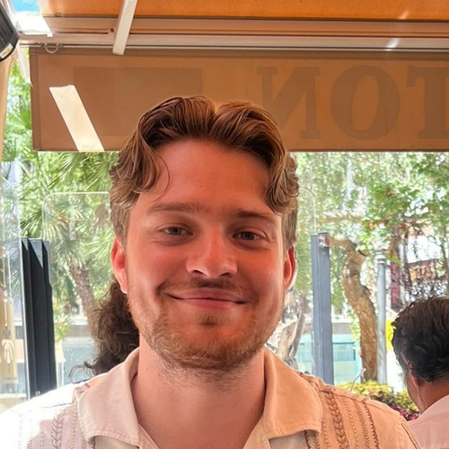
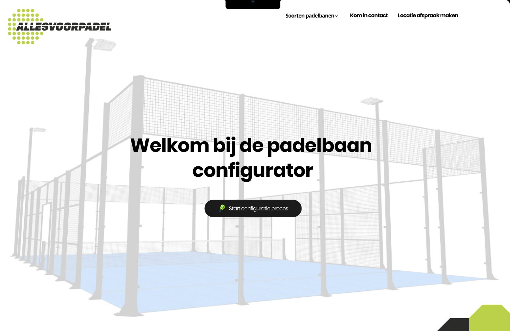
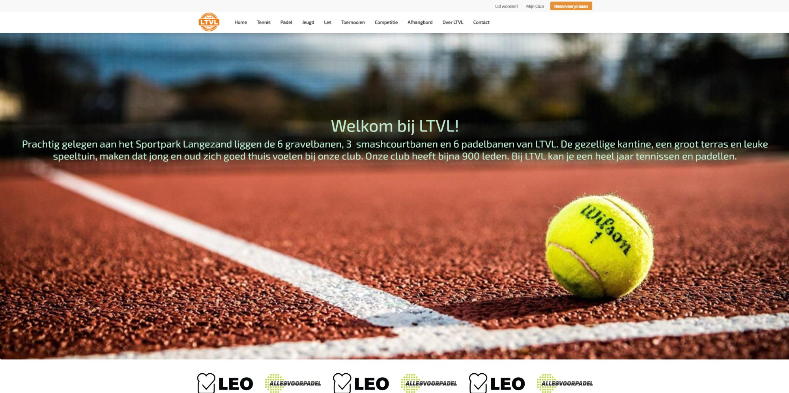
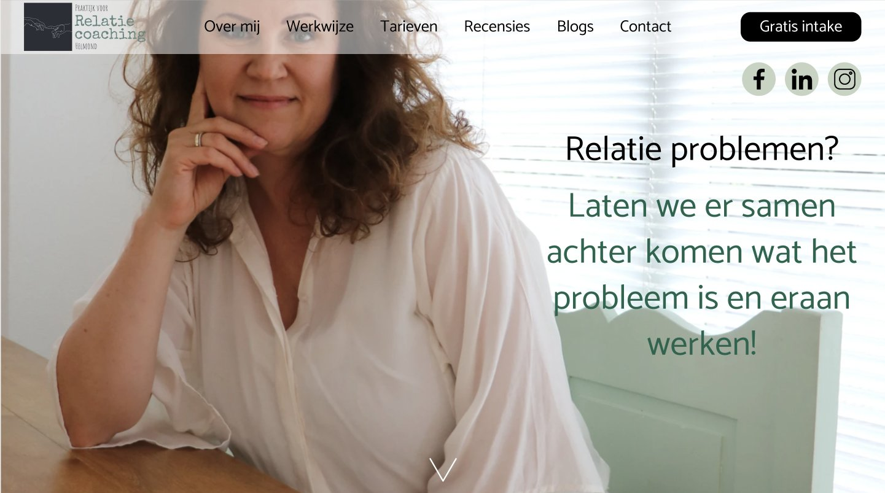
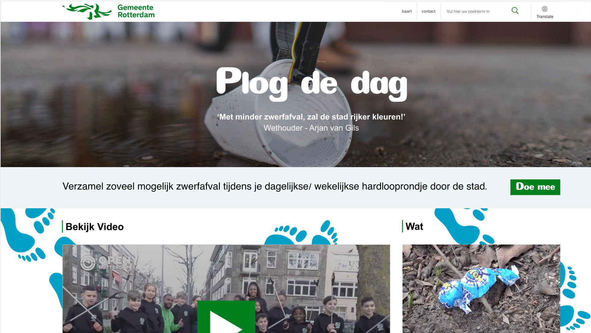
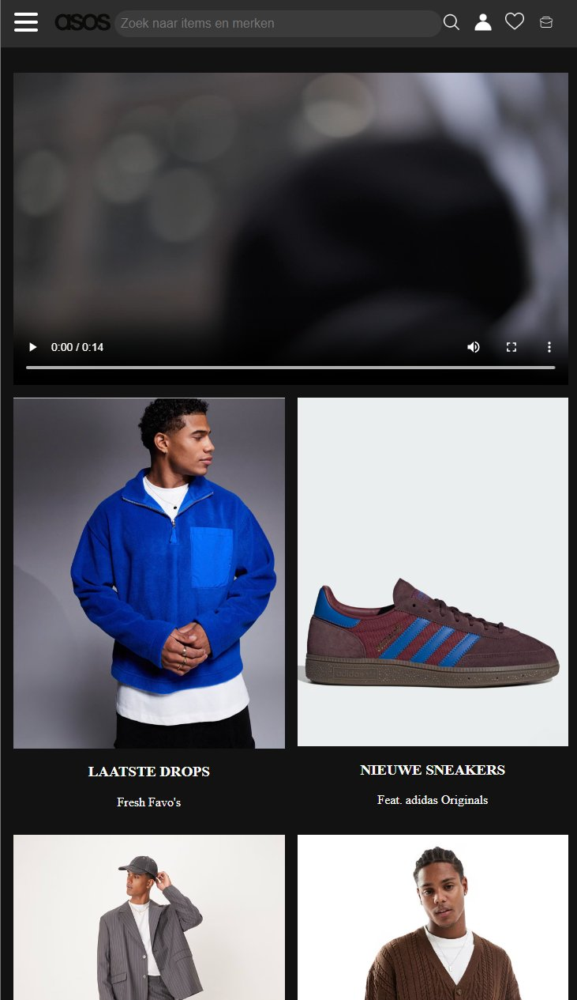

Ik ontwerp digitale ervaringen die echt werken. Of het nu gaat om een interactief prototype, een website of een visuele campagne — ik pak graag het hele creatieve proces aan.

Jouw foto hierPortfolio
Een selectie van mijn werk — van UX design tot visuele campagnes.

Visuele configuratietool ontworpen voor Allesvoorpadel waarmee klanten zelf hun ideale padelbaan samenstellen.
Allesvoorpadel vroeg mij een digitale en interactieve oplossing te ontwikkelen die klanten een helder en volledig beeld geeft van de padelbanen die zij aanbieden. Uit mijn onderzoek bleek dat klanten onvoldoende inzicht hadden in de mogelijkheden en meer controle wilden bij het samenstellen van hun ideale padelbaan. Daarom heb ik de Padelbaan Configurator ontworpen: een visuele tool waarmee klanten alle onderdelen aanpassen, direct zien hoe de baan eruitziet en wat de prijs wordt. Creatieve vrijheid, transparantie en vertrouwen voor de klant — en voor Allesvoorpadel precies inzicht in wat de klant wil.
Bekijk prototype →
Before/after LTVL website>Nieuwe clubwebsite opgezet op het KNLTB.Club platform ter vervanging van de verouderde Wix-site.
De oude Wix-website was verouderd en onoverzichtelijk. Via het KNLTB.Club platform heb ik een volledig nieuwe site opgezet. Binnen de mogelijkheden van het CMS de contentstructuur, SEO en visuele stijl vormgegeven. Custom CSS ingezet voor een eigen look-and-feel die past bij de club.
Bekijk live site →
Website-prototype ontwikkeld voor een start-up in de relatiecoaching als basis voor haar online aanwezigheid.
Voor een start-up in de relatiecoaching heb ik een website-prototype ontwikkeld dat dient als inspiratie voor haar toekomstige online aanwezigheid. De eigenaar maakte een carrièreswitch en zocht een frisse uitstraling voor haar nieuwe onderneming. Het resultaat is een modern en gebruiksvriendelijk prototype dat zij kon gebruiken als basis voor haar definitieve website.
Bekijk prototype →
Responsive website ontworpen voor een gemeentelijke campagne die inwoners stimuleert actief bij te dragen aan een schonere stad.
De gemeente Rotterdam lanceerde de campagne "Plog de Dag" om Rotterdammers aan te moedigen tijdens het wandelen afval te verzamelen. Ik heb een volledig responsive ontwerp gemaakt — geschikt voor mobiel, tablet en desktop — dat de campagne helder uitlegt, bezoekers motiveert om mee te doen en praktische informatie biedt om direct aan de slag te gaan.
Bekijk prototype →
Complexe website volledig nagebouwd met semantische HTML en pure CSS, zonder divs, spans of classes.
Voor dit project heb ik de website van ASOS volledig nagebouwd met uitsluitend semantische HTML-elementen en pure CSS. Geen divs, spans, classes of andere niet-semantische constructies. Het doel: een website waarvan de structuur logisch, betekenisvol en toegankelijk is — zowel voor ontwikkelaars als voor screenreaders. ASOS gekozen vanwege de uitgebreide indeling en vele componenten.
Over mij
Digital designer met een BSc in Communication & Multimedia Design. Ik krijg energie van het bedenken van oplossingen die echt werken voor mensen. Sterk in conceptueel denken, snel schakelen en samenwerken.
Planning, draaiboeken, locatie scouting en stakeholdercommunicatie. Daarnaast geluidsman.
Onderhoud en hygiëne van de sportaccommodatie.
Contact
Geïnteresseerd in samenwerken of heb je een vraag? Neem gerust contact op.